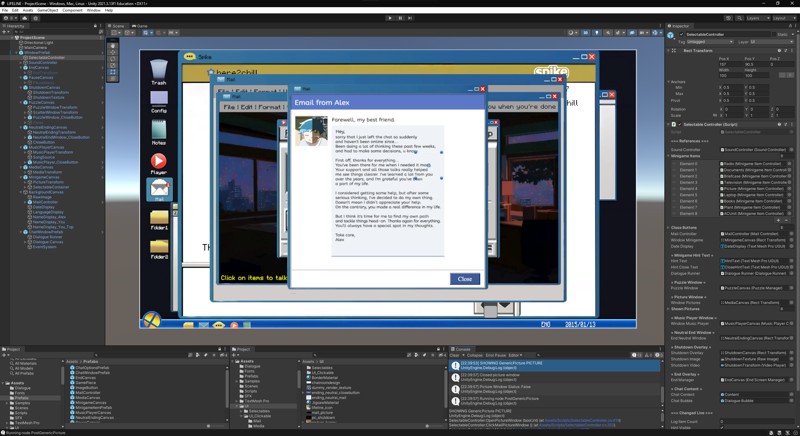
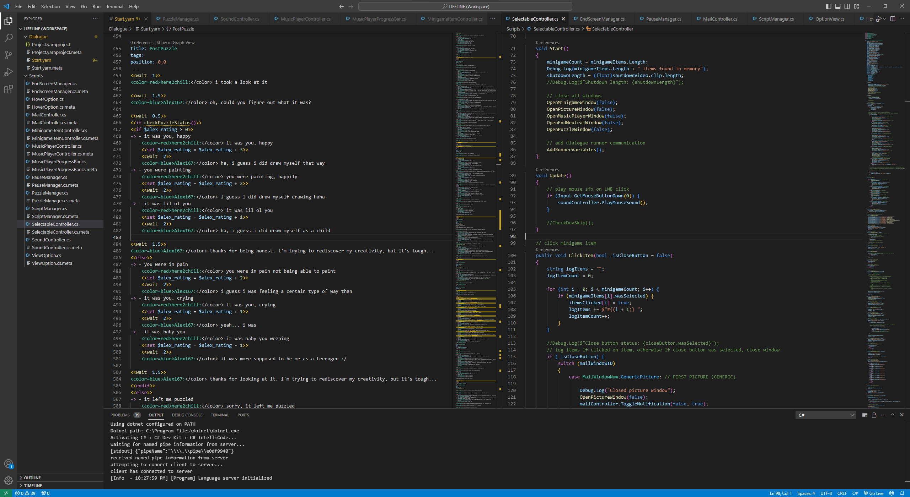
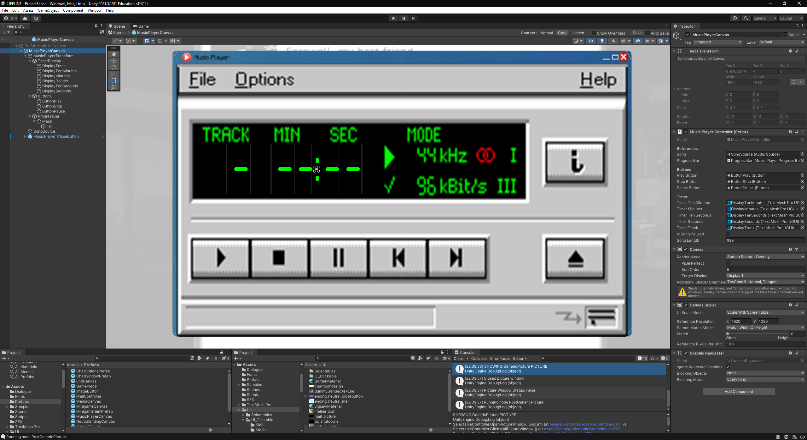
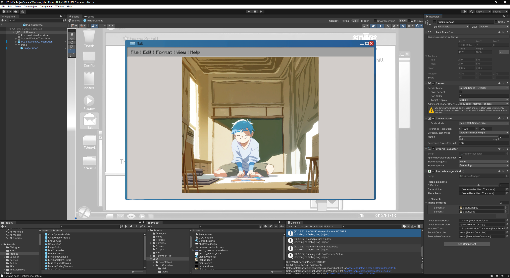

During planning we obviously had to make sure everything we had set out to do was actually feasible to accomplish in the timeframe. First off, we had to choose an engine. From the ground up is unreasonable and time intensive these days, so instead we chose Unity as the preferred game engine, as I’ve already had experience using it from my internship semester, as well as personal projects, so it seemed like the smartest pick.

While I’ve tried my hand at platformers and top-down shooters, I’ve never programmed a chat simulator before. Since we wanted the dialogue to be flexible and easy to rearrange, it would take a lot of work to create this kind of dialogue system from scratch.
I already knew that the company I interned at, as well as other indie studios, used a Unity plugin called Yarn Spinner to manage their dialogue, and it would probably be faster to learn how to adapt code around it than to try to create our own system.
While it was definitely the right decision to use Yarn Spinner to manage our dialogue, as it made writing it much easier, as well as creating different points in the dialogue to jump to a lot smoother, it had complications nonetheless.

The biggest issue we ran into was communicating between regular C# code (which Unity uses) and Yarn code (which the plugin uses within the dialogue system). This required a lot of research into the inner workings of the plugin, as well as direct communication with the developers of Yarn Spinner, so we could get the chat system set up just how we wanted.
The ability to assign different chapters within the dialogue made the writing and planning process less of a headache as well.
After a lot of fiddling around, we finally figured out how the rest of the code can interact with the dialogue, and vice versa. This made the subsequent process of implementing new features, such as creating new minigame windows that would be openable at a certain point in the story, a lot easier.

Triggering these events through the dialogue went very smoothly after the initial learning curve. Some bumps arose, such as creating working old-school mp3 player. Even things such as unsuspecting things like an old digital display of the song’s timer, which would just move around each time if done as a single text object, had to be split up into 4 unique text elements, each displaying only a single digit of the song’s time, to maintain the illusion.

Others, like the puzzle minigame I wasn’t quite sure of how to make the image hot-swappable depending on the ingame rating you were given, as I had originally planned to already have the pieces separated before starting the puzzle. Thankfully I found out that you can assign coordinates of the image onto different meshes, which would remember their original position, and then get shuffled around.
Bigger difficulties aside, we also ran into smaller problems like having objects display an outline on mouse over, such as during the point & click minigame were also new problems we had to find solutions for, but they were manageable enough.
Overall, it was a great learning experience and I thoroughly enjoyed having such freedom over the topic and what we wanted to present.